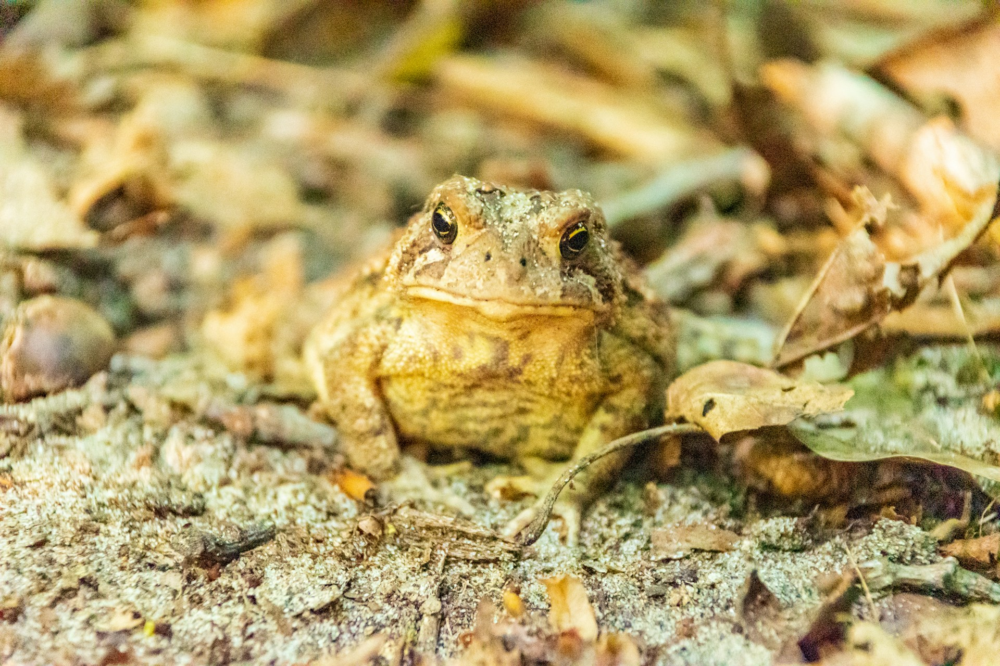
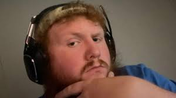
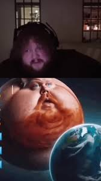

Who am I?
Hey there how's it going? I'm going to talk about myself in this one.
 Toads InfoI have always loved taking care and tending to Toads, Frogs and other animals. But right mow i am going to talk to you about toads!
Toads are Amphibians which means they spend their lives in water and on land. They can go in between but they mostly stay on land as they can't breath underwater.
Toads are also known for being fat, and chunky and having a very large appatite. They can and will eat anything that moves, and they aren't really the best on thinking it through.
here's who i like to watch or listen to.
 Caseoh_This is Caseoh, he is one of my favorite stramers to watch and listen to when doing most of anything.
Some pretty interesting things about caseoh are;
He has only been streaming for around 3 years as he started in September 11th, 2022 .
he has over 7.5 million followers on twitch, and averaging around 50,000 viwers per stream.
he was awarded gamer of the year award in 2024, with only 2 years under his streaming career.
and he is known for his southern country approach to most things, as he tells his viewers that he live sin a trailer in the middle of the woods in Arkansas.

I have no idea why this is so funny the way his viewers make these videos like this.